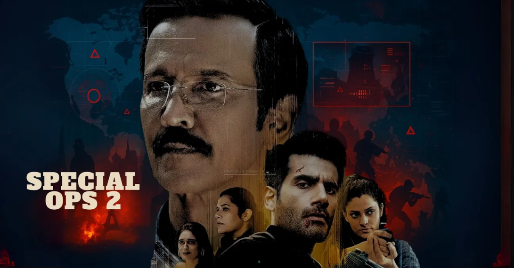
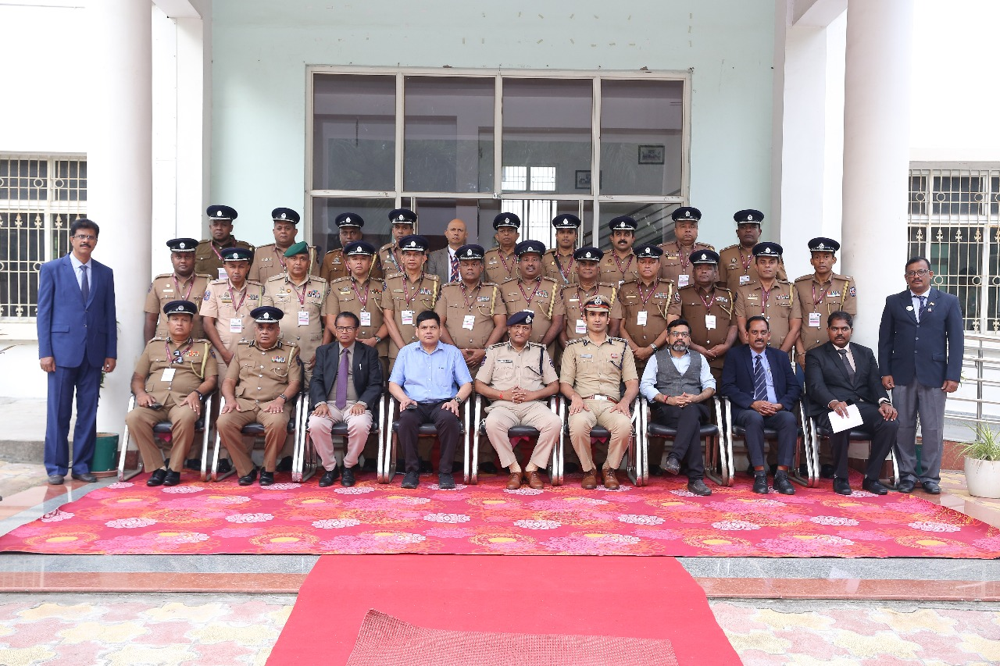

Public conversations
Clear, responsible explanations of digital risk for broad audiences.
Media and books
Amit’s public education work brings cybercrime awareness to audiences far beyond the security industry.
Clear, responsible explanations of digital risk for broad audiences.

Cybercrime, resilience and digital-safety perspectives for leadership audiences.

Practical resources on cybercrime and safer digital behaviour.
For programmes and events
For speaking, media and educational collaborations, start with a consultation request and include the audience, format, date and the outcome you are looking for.
Make an enquiry